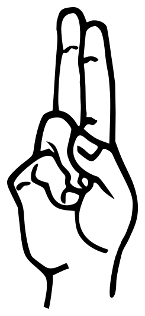
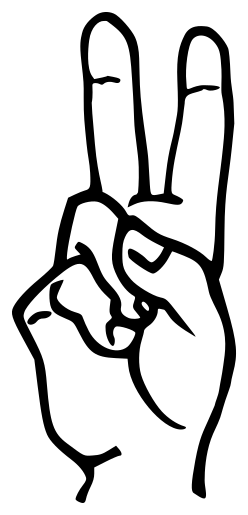
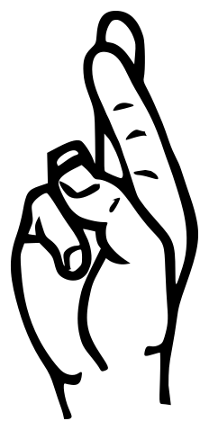

A hand held in front of a camera becomes a letter. No gloves, no sensors, no server — a hand tracker and a hundred decision trees, running inside the page you are reading.
Explore the signsASL has its own grammar and word order. It is not English rendered in gestures. The manual alphabet is one small part of it, used to spell names and words with no sign of their own.
Which fingers are raised, where the thumb sits, which way the palm faces. Change one of them and the letter changes with it. There is no picture to match, only a configuration.
Every frame is reduced to twenty-one joint positions. Those numbers, not pixels, reach the classifier — which makes it fast and largely indifferent to lighting and background.



U, V and R differ only in how two fingers are spaced. They are not three separate categories so much as points along one continuum, and a classifier has to draw its line somewhere in between.
Most of the work on this project was not the model. It was measuring where those lines actually fall.
J and Z are drawn in the air. A single frame cannot capture a path, so they are left out.